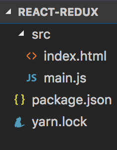

Node version 6.10.1
React version 15.6.1
Redux version 3.7.2
Last updated 2017-08-17
We have a brilliant idea! We NEED to create an app which fetches the public repositories from a users GitHub...
And we've also heard about this newfangled tech called React, and that it meshes well with Redux. Cool~!
I know NOTHING about either of those frameworks, but how hard could it be?...
Oh... and I don't like code being scaffolded out for me...
AHHHhahhahahaaahahaahaaaaaaa...... 😈🙈
Let's create our index.html and main.js files in the src directory
But that's ok. ONWARDS! ==>